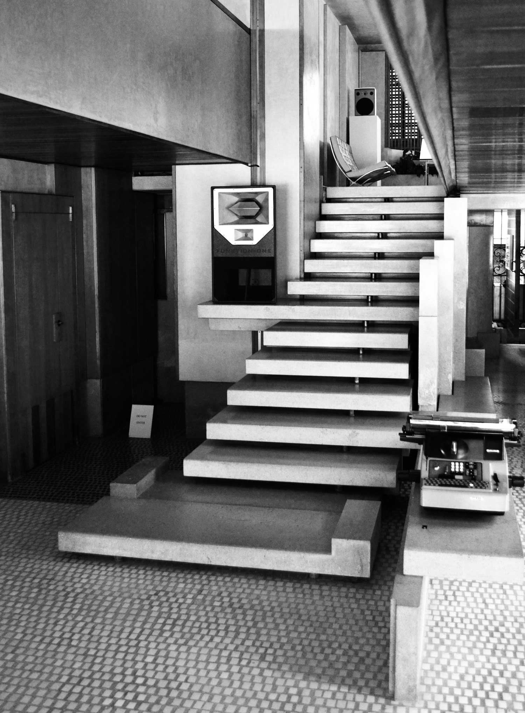
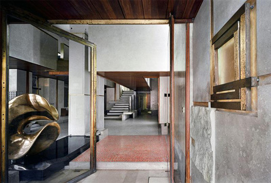
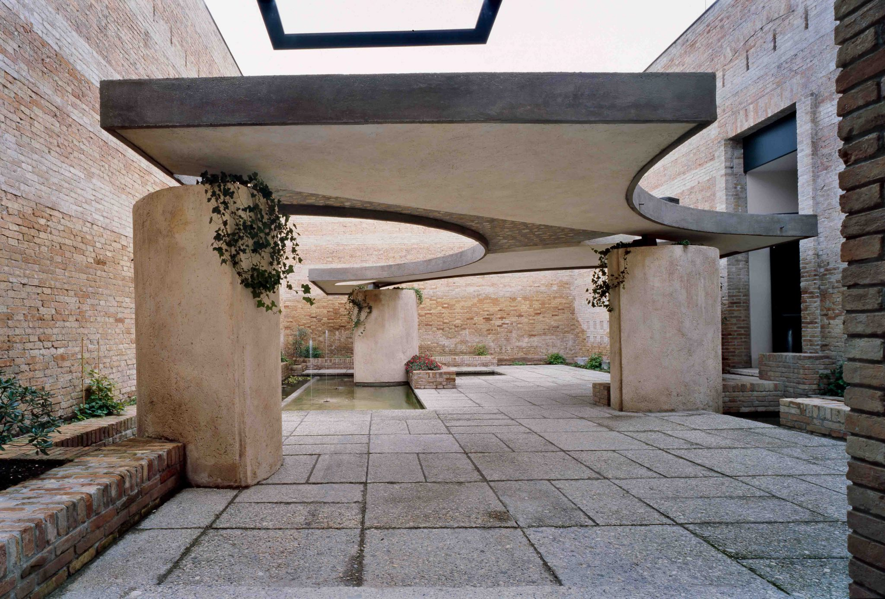

Design
Carlo Scarpa: The master of discrete dialogues
10 January 2017 / by Irina Lakicevic

Carlo Scarpa, Tomb Brion
‘The light is shattered into gold on every cloud, my darling, and it scatters gems in profusion.’
When contemplating on the transformative power of light, the verse from one of Rabindranath Tagore’s poems comes to mind– so does the Italian professor of design Carlo Scarpa – an artisan of immense detail, highly revered for his exceptional understanding of the complexities of natural light. Volumes have been written about Scarpa, each in an attempt to summarize the architectural endeavours rooted in the designer’s carefully considered spatial composition and light’s resonance within them, albeit Scarpa’s highly intuitive work renders little foothold for the subsequent categorization. The common misconception about one of the most enigmatic figures of modernist architecture comes from the notion that Scarpa was in fact not an architect. While Scarpa never concerned himself with taking the final exams leading to gaining his architect’s practicing license, his place as a faculty member at the Royal Academy of Fine Arts in Venice for almost 15 years did earn him the honourable title of ‘professor’.
The refined approach Scarpa pursued, resulted in the unobtrusively woven narrative between the old and the new. The intimate dialogue between their dissimilarities serving as a token of complexity of Scarpa’s artisanship. Museo Canoviano displays perhaps the perfect example of the seamless synthesis of these two architectural styles more than 500 years apart . The intuitive approach the Italian master embraced, heralded the importance of subtle variations of natural light and recognized lights transformative abilities on spatial interplay (not much unlike the work of Australian photographer Olive Cotton). Deploying Japanese sensibility in his work, Scarpa emphasized the dialogue between space, object and the subject. Combined this trio renders the basis of the Japanese conception of art as an active process. Thus entering one of Scarpa’s projects is like entering a conversation and it addresses the nature of intervention as much as it highlights a specific subject.. Scarpa’s work finally received the deserved acknowledgment in 1948 after an installation of Paul Klee’s work at Venice Biennale, since then Scarpa became intimately associated with the Biennale. Additionally Scarpa has gained much recognition for his work at Olivetti showroom that has recently been restaurated to it’s original features.
MULTIPLE LEVELS OF MEANING COEXIST IN A SINGULAR ARCHITECTURAL MOMENT, RENDERING THE VIEWER A PLETHORA
OF IMPRESSIONS FROM MONDRIAN TO NEOCLASSICISM TO JAPONAIS AND MODERNISM.
OF IMPRESSIONS FROM MONDRIAN TO NEOCLASSICISM TO JAPONAIS AND MODERNISM.



Carlo Scarpa Italian Pavillion ©RobertMcCarter ,Phaidon Books
Unveiling the symbiotic relationship between multitude of considerations was fundamental to Scarpa’s architectural expression, the notions of void and solid originating from Japanese aesthetics stand central in his later endeavors such as Tomb Brion. Commissioned by the widow Onorina Brion to create an addition to the municipal cemetery the amount of influences is abundant and complex. Multiple levels of meaning coexist in a singular architectural moment, rendering the viewer a plethora of impressions from Mondrian to Neoclassicism to Japonais and Modernism. Scarpa died at the age of 72 with Tomb Brion his final resting place.